This portfolio complements my CV by showing the design work behind the
results: the level of detail in my CAD, the range of concepts and iterations
I develop to reach an optimum solution, and how those designs become
practical tools and hardware for research and production.
Some of my strongest CAD work cannot be shown publicly because it is
protected by employer intellectual property. Where customer-product CAD is
unavailable, I show the production, assembly and test tools I designed to
manufacture and verify that hardware. No source CAD files are available for
download.
Dyson-funded · Institute of Sound and Vibration Research
1
Noise Reduction of a High-Speed Fan
An experimental investigation into applying noise-reduction methods developed for
flat plates to curved outlet guide vanes (OGVs) and a high-speed rotating fan,
while measuring the resulting acoustic and aerodynamic tradeoffs.
9Modified OGV concepts developed
5OGVs manufactured and rig-tested
26082-T6 aluminum fan designs
≈8 dBLater recorded fan-noise reduction
Porous
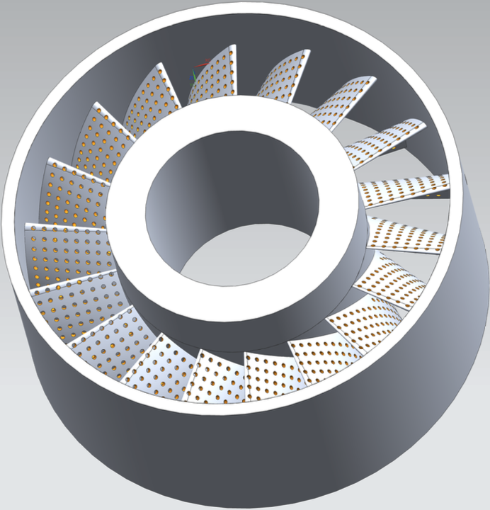
Slitted
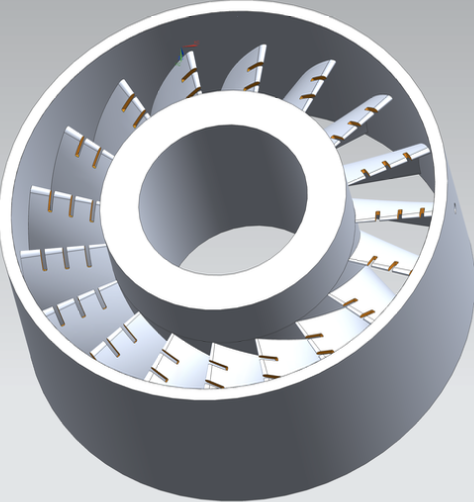
Serrated
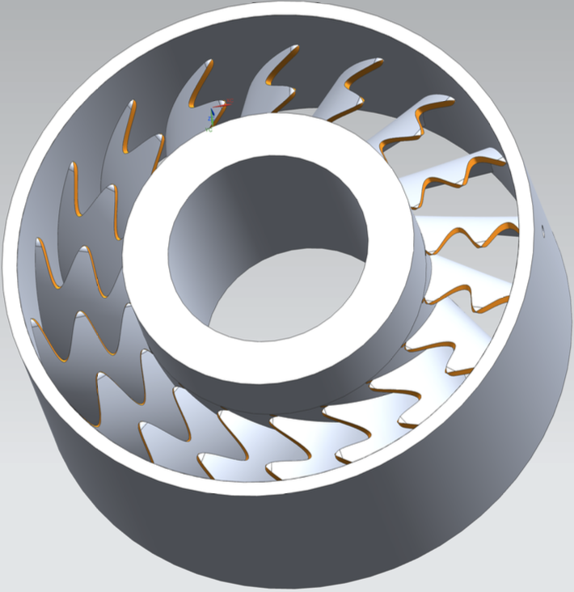
Representative OGV designs
The three mechanisms are shown on the same baseline geometry for direct comparison.
1 · Research question
Transfer three proven mechanisms to curved fan hardware
The research investigated whether leading-edge serrations and slits, or
porosity applied across a surface, could reduce noise when transferred from
flat-plate research to curved OGV airfoils while minimizing aerodynamic loss.
2 · Geometry challenge
Modify protected STEP geometry without a feature history
Dyson supplied solid-body geometry to protect intellectual property. The OGV
curvature and local angle change continuously along the span, so every cut had
to follow the local surface. After SolidWorks proved too slow for the required
iteration, I moved the work to Siemens NX and produced nine printable designs.
OGV design development
Nine concepts across three noise-reduction mechanisms
Two porous, three slitted and four serrated OGV concepts varied the geometry of
each mechanism so its acoustic effect and aerodynamic penalty could be tested.
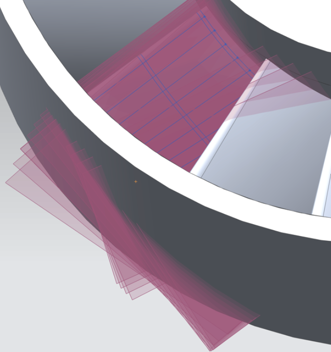
Porosity · 2 concepts
Locally aligned cylindrical cuts
Equally spaced cylinders were constructed normal to local vane planes, then
patterned radially around all 17 vanes and subtracted from the baseline body.
The fully porous design used 1 mm holes spaced 10 mm apart; the partial design
used two rows of 2.5 mm holes to increase communication between surfaces.
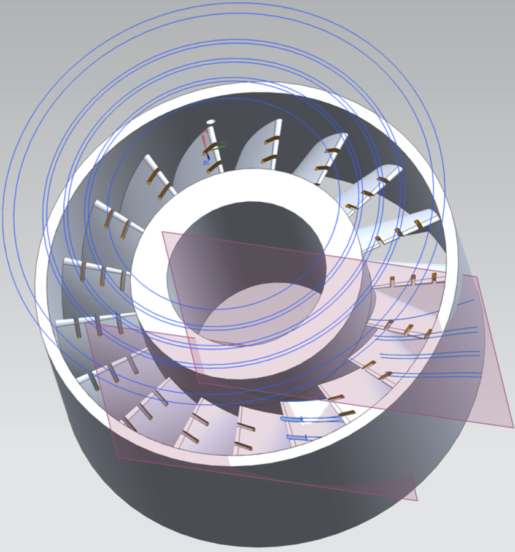
Slits · 3 concepts
Projected geometry following the leading edge
Curves from a radial plane were projected onto the vane and then onto a local
tangent plane. The resulting profiles were thickened, patterned around the
OGV and subtracted. The three designs varied slit width from 1 to 1.5 mm and
slit length from 5 to 10 mm.
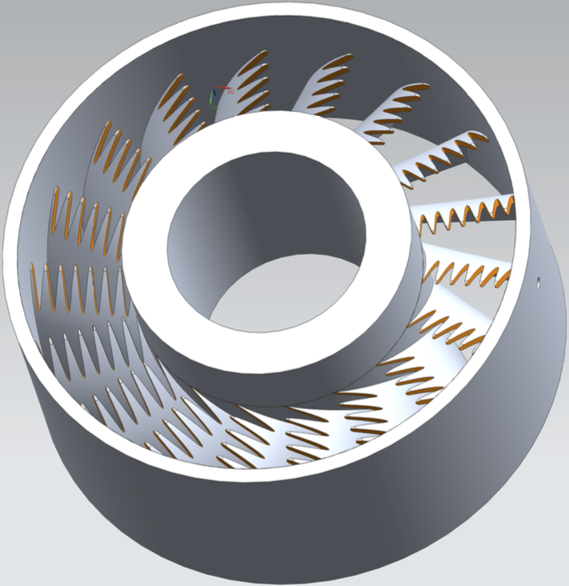
Serrations · 4 concepts
Sinusoidal edges varied by wavelength and amplitude
A sinusoidal curve was drawn on a plane tangent to the vane, thickened into a
cutting body and patterned around all vanes. The set compared 3, 5 and 10 mm
wavelengths at a 10 mm peak-to-peak amplitude, plus a half-amplitude variant.
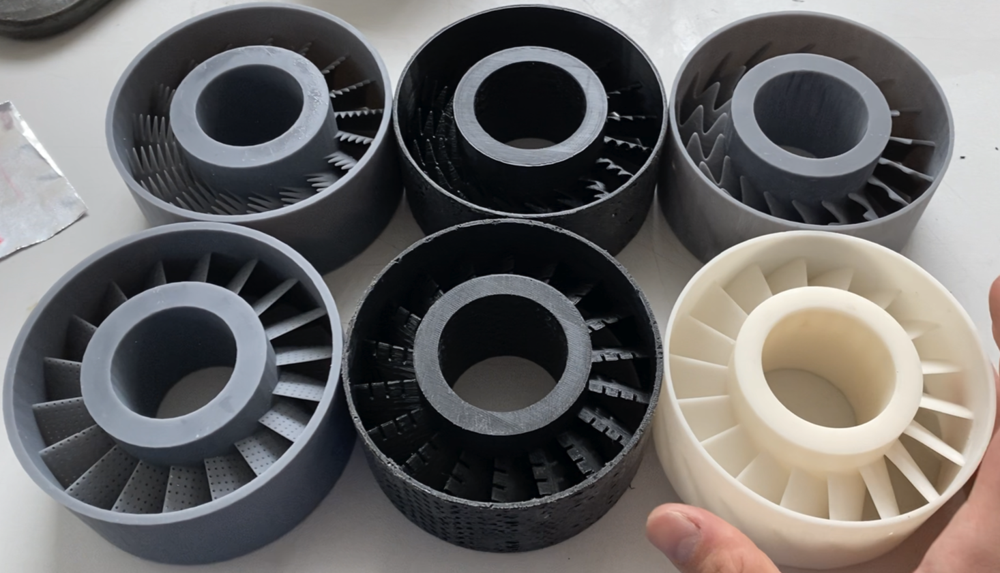
Five test OGVs and the baseline. Two black parts were produced by FFF; three
gray parts by SLA.
Manufacture & rig testing
Five OGVs progressed from CAD to experiment
Serra-B and Slit-A were produced by fused-filament fabrication. Surface finish
made post-processing difficult, so Porous-A, Serra-A and Serra-C were produced
by stereolithography. Every design was sanded to achieve a tight, coaxial fit
with both the motor and the surrounding metal ring.
Acoustic and aerodynamic data were collected from 2,000 to 7,000 rpm and at
several pressure differentials around the 4,400 rpm operating point. None of
the five OGVs produced a meaningful sound-power reduction against the baseline,
demonstrating that OGV interaction was not the dominant broadband noise source.
Evidence changed the project
The null result redirected the work toward the dominant source
Rather than ending with an unsuccessful OGV campaign, I extended the project to
the rotating fan blades, which were known to be a dominant noise source. I designed
leading- and trailing-edge serrated fans to pursue a measurable reduction.
Leading-edge serrations
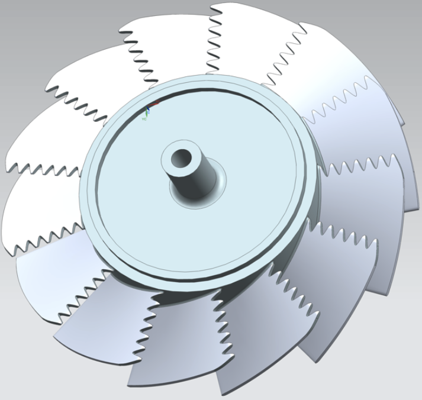
Trailing-edge serrations
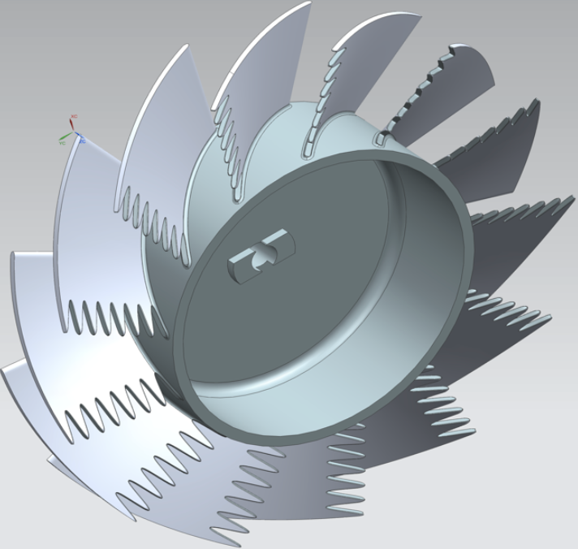
Serrated fan concepts
Edge treatments were transferred from stationary OGVs to the rotating source.
Structural validation
ABAQUS analysis before committing to five-axis machining
Each fan required approximately one week of machining from a single block of
6082-T6 aluminum. Structural analysis therefore verified the most aggressive
serration geometry before material and machine time were committed.
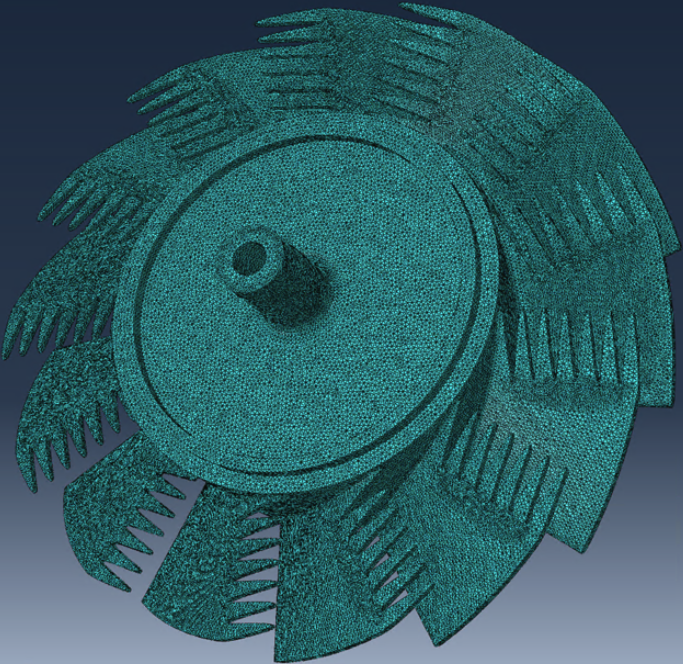
Tetrahedral meshFine global seed reduced to 0.6 mm within the academic-license node limit.
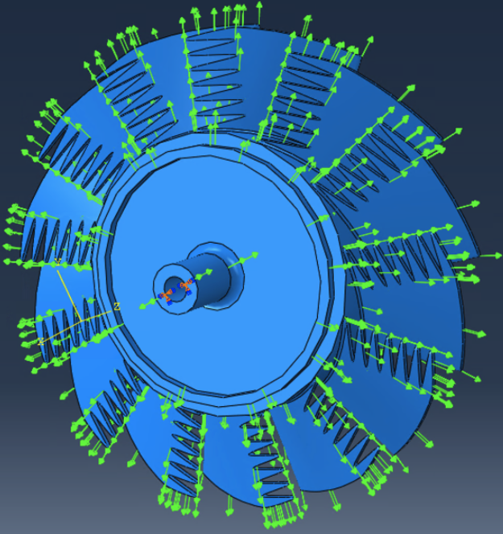
Boundary conditionsRadial centrifugal loading with the hub fully constrained.
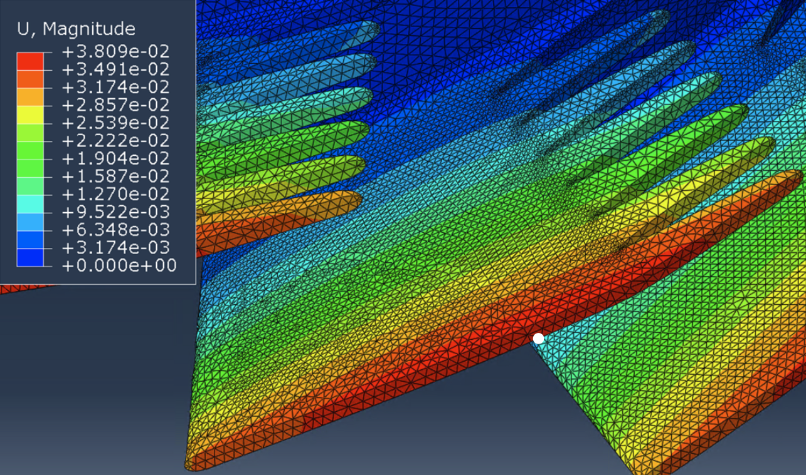
DeformationMaximum predicted displacement was 38 microns.
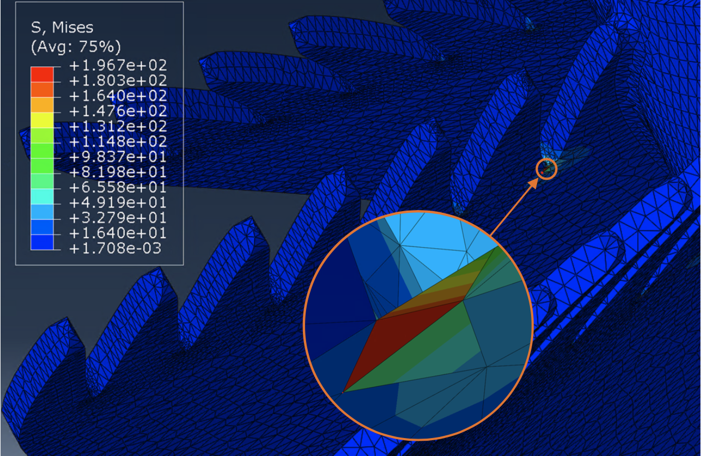
Maximum stress197 MPa at the serration root, below the 250 MPa material yield strength.
Design case
The 10 mm peak-to-peak leading-edge serration was selected as the highest-stress geometry.
Load case
Analysis represented 150% of the centrifugal load at the 7,000 rpm test maximum.
Mesh convergence
1.5, 1.0 and 0.6 mm meshes converged to within 8 and 6 microns of maximum displacement.
Material
6082-T6 aluminum: 70 GPa Young's modulus, 0.33 Poisson's ratio and 2.7 g/cm³ density.
Five-axis manufacture & result
Complex geometry became testable metal hardware
The serrated geometry required five-axis CNC machining. Cutter failures and
machine errors forced several restarts because even small asymmetry could create
unpredictable vibration at speed.
At dissertation submission, the tested trailing-edge fan produced a 3 dB
reduction in important frequency bands - approximately a 50% reduction in
sound power - with a 2.98% to 3.62% reduction in axial flow. Subsequent testing
recorded on my USC CV reports approximately 8 dB reductions from both completed
fan designs.
Manufactured serrated aluminum fan clamped on the five-axis CNC.
Research evidence
Complete MSc dissertation
The dissertation documents the CAD development, manufacture, structural
analysis, acoustic testing and aerodynamic comparison.
A four-part robotic gluing and pneumatic membrane-placement process developed
to waterproof microphone housings while protecting acoustic performance and
eliminating the variation of the original manual operation.
40% → 98%Production yield
4×Faster than manual gluing
4Housings processed on each tray
25Pneumatic outlets in three rings
The problem
Waterproof the microphone without changing its acoustic response
An existing microphone needed thin membranes bonded directly to the front
and rear housings. Each seal required a circular adhesive bead followed by
accurate placement and controlled pressure around the complete membrane lip.
Manual gluing produced variable bead width and occasional blobs. Excess
adhesive could move away from the circular lip and across the membrane,
causing inconsistent frequency-response results during acoustic testing.
Rejected microphones then had to be broken apart so the internal assembly
could be salvaged while the housings had to be discarded, wasting labor
and production time.
The complete response
Control every stage instead of relying on individual operator technique
I replaced the hand-gluing operation with a robot program and designed
removable four-part trays that locate the housings beneath the dispensing
needle. I then replaced the upward-facing vacuum jig with hand-held
vacuum/pressure stamps, a four-way pneumatic valve, UV curing and final
pressure testing.
The same tray remains with all four housings after gluing. The operator no
longer removes and flips each housing individually, reducing handling and
keeping every part in a known position throughout the process. The aim was
maximum consistency between operators, with every assembly remaining within
the required acceptance band.
Robotic adhesive dispensing
A repeatable circular path across four housings
The adhesive path is programmed as two connected arcs. Dispensing begins before
the first arc and stops after the second; the robot then traces the same circle
twice with the dispenser off to spread the adhesive evenly. Horizontal and
vertical moves then index to the remaining housings on the four-part tray.
Original membrane process
Vacuum or off was not enough
The original fixture faced upward. An operator positioned a membrane with
tweezers, slowly flattened it against six vacuum holes, then pressed a glued
housing down onto it. Turning off the suction was expected to leave the
membrane attached to the housing.
Pressure was difficult to apply evenly around the seal. Adhesive was often
squeezed onto the fixture, allowing the membrane to remain stuck to the jig
instead of the housing. The six vacuum points also allowed wrinkles that could
alter the later acoustic response.
Redesigned membrane process
Vacuum, neutral and positive pressure
The new hand-held stamp uses vacuum to collect the membrane, neutral pressure
while it is brought onto the adhesive, and positive pressure to release it
deliberately onto the housing. This third state prevents the stamp from
depending on passive release.
A four-way valve selects the state. In its center position both supplies are
blocked, while the Dymax 5 relief valve protects the pneumatic source. In the
air and vacuum positions, the unused supply is redirected through the hidden
fourth port under the valve to atmosphere.
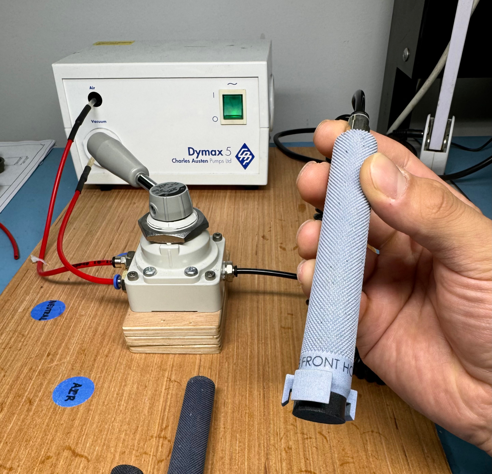
Manufactured front stamp with the Dymax 5 pneumatic source and four-way control
valve used for vacuum, neutral and positive-pressure operation.
Stamp geometry & internal channels
Front and rear tools, outside and inside
Both stamps combine a secure grip, alignment guides and a mechanical depth stop.
Internal channels divide one pneumatic connection into 25 outlets in three rings,
supporting the membrane more evenly than the original six-hole jig and reducing wrinkles.
Front stamp
Rear stamp
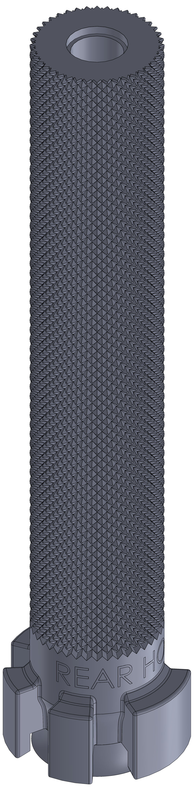
External tool geometryInterface-specific tools with the same operating principle.
Front cross-section
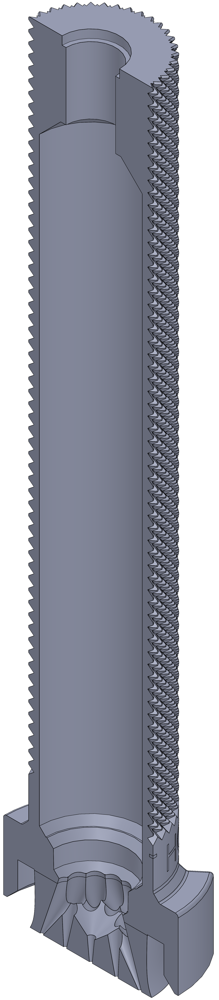
Rear cross-section
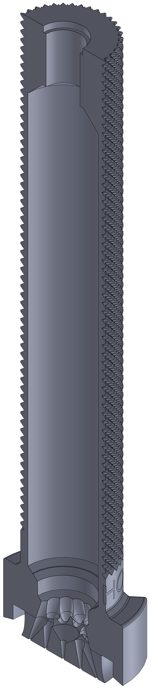
Distributed pneumatic channelsThe central passage divides into three outlet rings.
1
Full-length knurled grip
Knurling across the body gives the operator a secure hold, reducing unwanted
movement and making controlled placement easier.
2
High-contrast contact face
The surface touching the membrane is printed black. The contrast makes it
immediately obvious whether a thin membrane is present and correctly located.
3
Three-ring flow distribution
Twenty-five outlets replace the original six vacuum holes, spreading support
across the membrane and sharply reducing wrinkles.
4
Parallel alignment guides
External legs keep the contact surface parallel to the adhesive ring so one
side cannot receive more pressure than the other.
5
Operator visibility
Gaps between the guide legs let the operator see the stamp approach and learn
the correct placement motion without obscuring the joint.
6
Mechanical depth stop
Guide height creates a hard stop. Even at maximum hand force, the membrane can
only travel to the experimentally established depth, making continuous contact
without squeezing adhesive across the membrane.
Built & implemented
Trial, manufacture and production release
The mechanical-stop height was established separately for the front and rear
housings through physical trials. Each tool had to press firmly enough to close
the complete adhesive ring without pushing material into the acoustic area.
The finished stamps were connected to the Dymax 5 through the four-way valve
and introduced with the robot trays, curing process and pressure verification.
The process was then adapted for additional microphone variants.
Outcome
Production yield increased from 40% to 98%.
Automated gluing was four times faster than manual operator gluing. The complete station made adhesive coverage, membrane pressure and release
repeatable while reducing acoustic rejects, material waste and rework.
Production Tooling · Industry
Fixtures shaped around the operator and the process
3
Production Jigs and Fixtures
Rapidly developed tooling that controls the critical geometry of each operation
while keeping production fast, intuitive and maintainable.
3A
Microphone processing
Universal Demagnetizing Fixture
The requirement
Several microphone variants had to be held at a repeatable height above an
electromagnet. Each microphone sits in the black spring-contact tray shown
above the blue fixture in the production photograph. Spring force changes
the closed tray height between variants and also tries to push the tray back
out of the fixture.
Problem with the original jig
The earlier station used a latch to resist the spring force. Inserting or
removing a tray required one hand to operate the latch and a second to hold
the tray, slowing a highly repetitive production task.
The mechanism
I replaced the latch with an adjustable friction bridge. The operator pushes
the tray past light friction with one hand, and that same friction holds the
tray at a controlled field position. An indexed screw is adjusted once for
the microphone variant at the start of a production run and remains fixed
for the whole batch.
The outcome
The additively manufactured fixture became a faster, universal station for
multiple tray heights and was introduced at the supplier for production use.
Adjustable fixture CAD
The bridge accommodates several spring-contact tray heights while
preserving a consistent position above the electromagnet.
Production installation
The black spring-contact tray slides into the blue printed fixture above
the electromagnet; product information has been obscured.
3B
Roll-pin insertion
Repeatable Assembly from Awkward Manual Operations
Requirement
Assemble two components with two roll pins simultaneously using an existing
hand press. Both pins had to remain directly above their holes throughout
the stroke without permanently modifying the press.
Design response
The fixture separates the functions into a fixed base, a replaceable
alignment bridge and an upper press attachment. Steel guide rods pass
through the bridge to drive both pins into the suspension assembly.
Maintainability
The bridge contains the guide holes and is intentionally replaceable. If
those holes wear, alignment can be restored without remaking the entire jig.
Implementation
Most components were 3D printed, with steel used in the pin-driving load
path. The production fixture clips to the press and locates through the bed,
creating a controlled process from existing equipment.
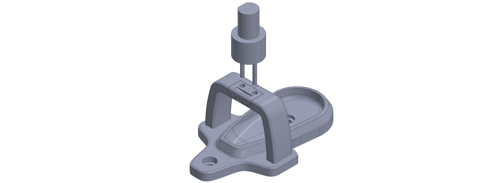
CAD assembly
Base, replaceable bridge and moving press attachment shown at a useful scale.
Manufactured components
Complete base, press attachment and replaceable bridges with steel guide rods.
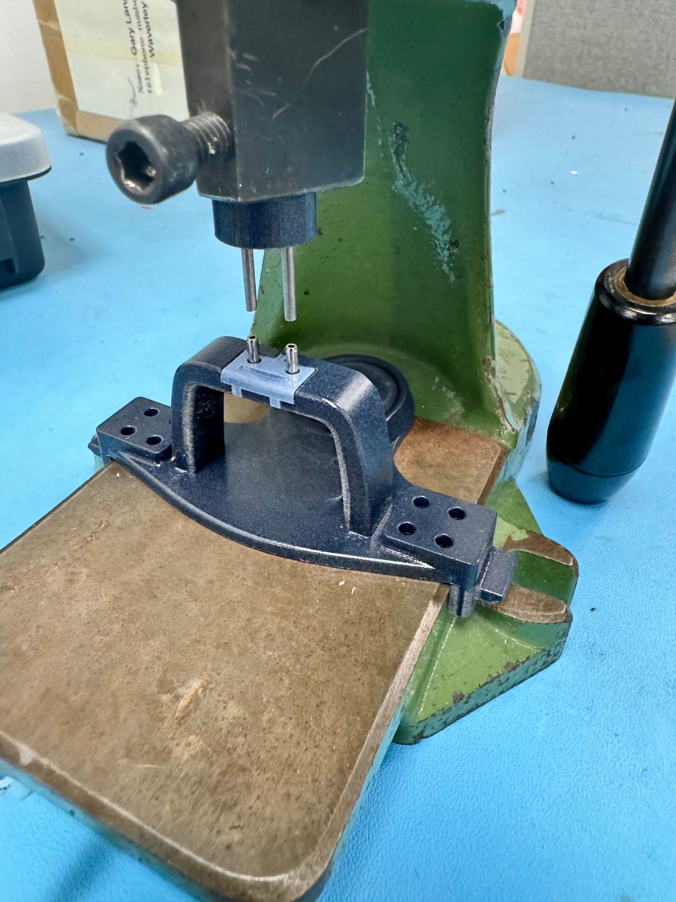
Installed tooling
The jig mounted to the existing hand press for production use.
Verification Engineering · Industry
Adaptable long-duration durability testing
4
Life-Test Fixture
A maintainable, adjustable test platform for repeatedly flexing different product
components through programmable distances when existing equipment could not
reproduce the required long-duration loading.
The requirement
Adapt one fixture to multiple parts and flex distances
Products qualified for demanding service environments also require life testing
to demonstrate long-term mechanical durability. The rig had to accommodate
different components, mounting positions and flex distances while remaining
easy to repair after a very high number of cycles.
Adjustable actuation
The linear actuator mount can move laterally and vertically to align with
different test articles. Stroke distance is programmed electronically; when a
required position lies outside the actuator's available travel, its mounting
block can be relocated along the repeated hole pattern.
Maintainable structure
Sheet-metal plates are joined with replaceable corner brackets, through-bolts
and nuts rather than permanent joints. Black printed covers protect the exposed
bracket geometry. An electronics enclosure on the reverse side contains the
actuator power supply and programming connection.
Rigid but fully serviceable bolted sheet-metal structure
Adjustable actuator position in multiple axes
Programmable stroke for different flex requirements
Relocatable mounting block extends the usable test range
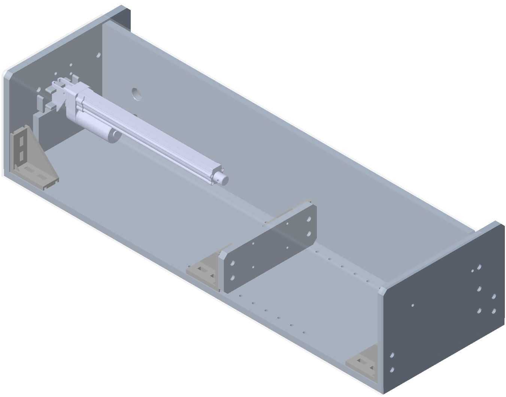
Complete test-rig CAD
Actuator, adjustable supports and protected bolted structure packaged into a
single maintainable fixture.
Built hardware
Designed for reconfiguration and repeated maintenance
The manufactured fixture uses the same adjustable actuator layout and bolted
panel construction shown in CAD. The selected photograph omits sensitive
product information while showing the production-scale structure and actuator.
Manufactured fixture with the linear actuator, support brackets and repeated
mounting positions visible.
Aerodynamic Design · BEng
University of Surrey · Formula Student
5
Formula Student Rear-Wing Development
A three-element rear wing developed from first principles through 28 CAD and CFD
iterations for the University of Surrey Formula Student car. The team placed fifth
overall in the UK competition.
28Aerodynamic design iterations
130 NRequired downforce at 12 m/s
≈ 180 NFinal isolated-wing downforce
5thOverall in the UK competition
Design requirements
Produce a measurable net benefit within Formula Student constraints
The rear wing had to exceed 130 N downforce at 12 m/s, cost no more than £660,
remain below 8 kg excluding DRS and swan-neck mounts, and achieve a high-quality
surface finish while satisfying the rulebook's working-volume, edge-radius,
strength and stability requirements.
Why three elements
The Formula Student problem was not a scaled Formula 1 problem
A comparison with Formula 1 showed that the Formula Student working volume was
205% larger while its typical cornering speed was far lower. The wing therefore
had to be developed for this operating point instead of copying a two-element
Formula 1 arrangement.
143 N
Single element
Flow separated at 16° incidence and the concept remained far below target.
280 N
Stacked double wing
Interference between the two layers increased the drag penalty and still missed the requirement.
3≈ 180 N
Three-element B2
Attached flow, 97 N drag and aerodynamic efficiency of 1.8 at the 12 m/s design condition.
Iterative workflow
Geometry, numerical force data and flow visualization
Airfoil coordinates were transformed in Excel using scale, rotation and
translation, then used to build the three-dimensional wing geometry in CATIA.
Each iteration received a fine SimScale mesh and was evaluated at 12 m/s.
Pressure and viscous forces were resolved into downforce and drag, then compared
with the previous version. Autodesk Flow Design visualizations showed separation,
attachment and upwash, guiding position, chord and incidence changes of only a
few millimeters or degrees at a time.
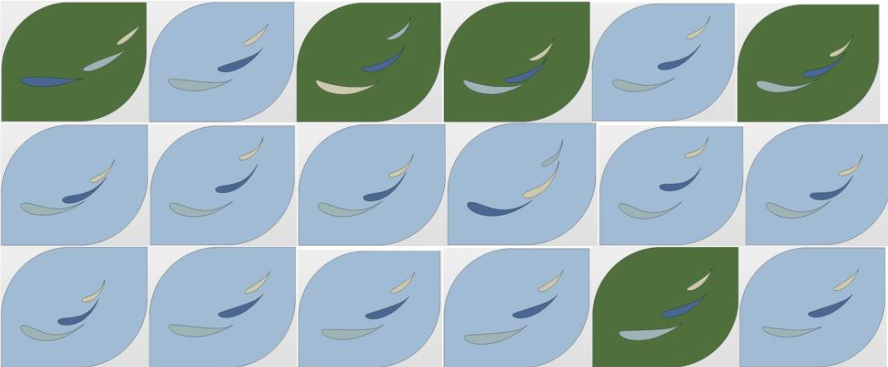
Airfoil iteration set
Candidate geometries developed and compared during the optimization process.
Separated flow · B6
Attached flow · final B2
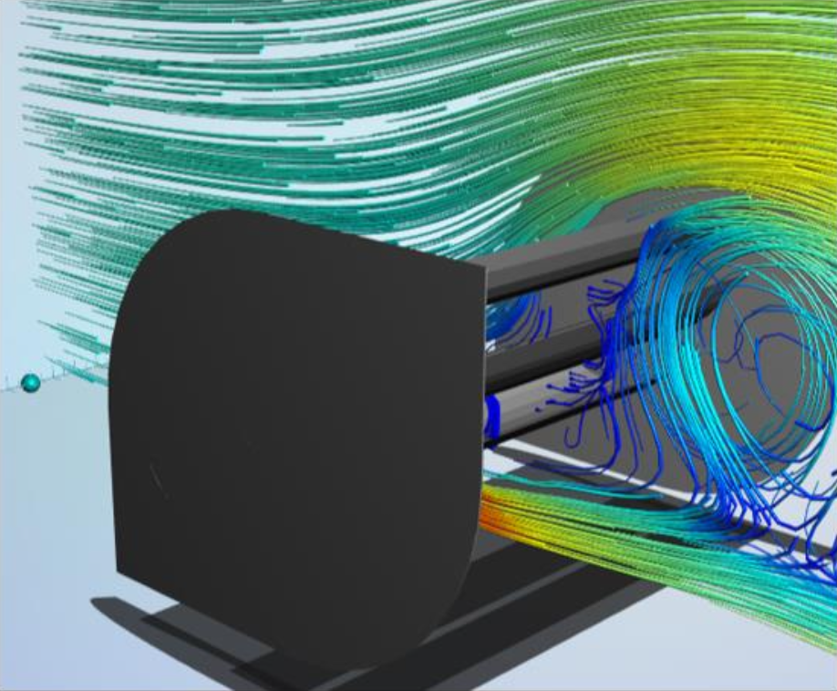
Flow visualization directed the iteration
Separation around B6 compared with attached flow around the selected B2 geometry.
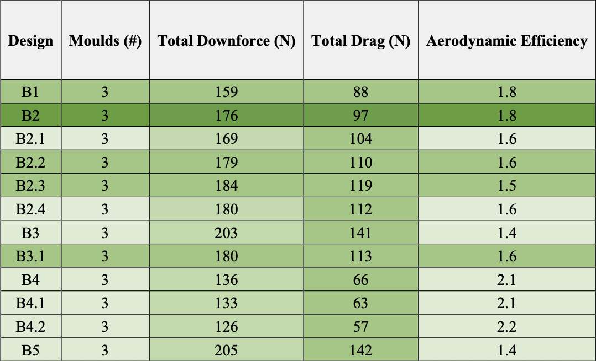
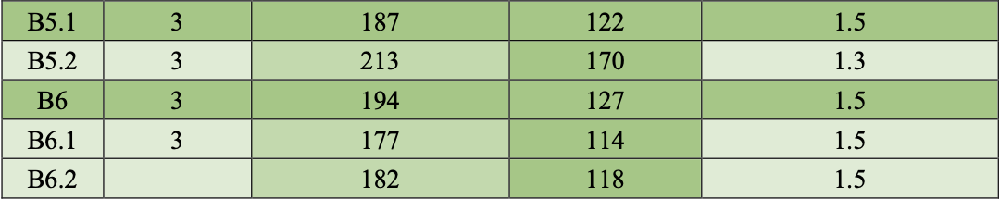
CFD comparison
Downforce, drag and aerodynamic efficiency across the B-series iterations.
Final aerodynamic selection
Fifty newtons beyond the original target
B2 was selected because it combined approximately 180 N of downforce with
97 N of drag and visibly strong flow attachment. Designs producing more force
carried much larger drag penalties and lower aerodynamic efficiency.
Moving from the earlier 80 N configuration to B2 increased downforce by about
100 N and exceeded the 130 N requirement by 50 N. Sharing its main airfoil
section with the front wing also reduced the number of manufacturing molds.
Team integration
Aerodynamic geometry prepared for CFRP manufacture
The team manufacturing concept separated each airfoil into upper, lower and
corrugated internal sections for prepreg carbon-fiber construction. Structural
detailing and swan-neck mounting were completed by other team contributors;
these images show how my aerodynamic surfaces entered the wider assembly.
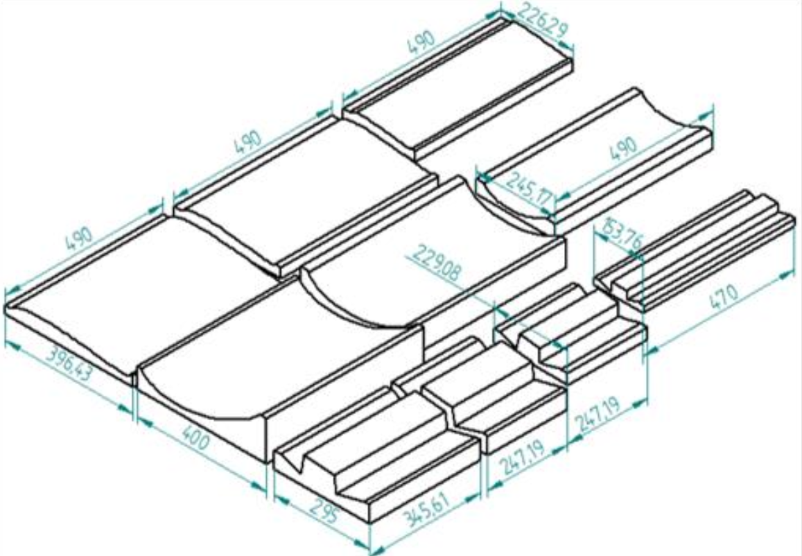
Upper, lower and corrugated-section mold strategy.
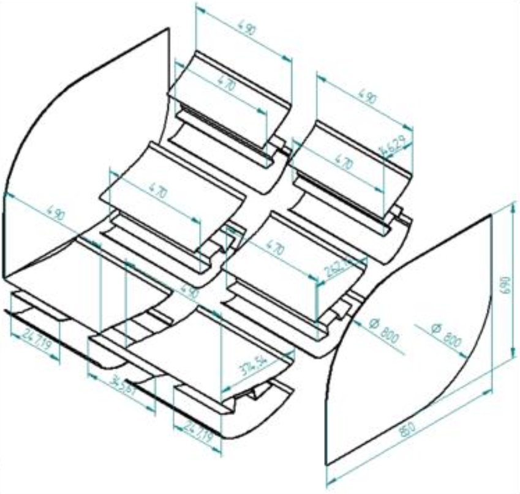
Team-developed exploded CFRP assembly.
Project evidence
CFD history and Critical Design Review
The linked SimScale project shows the digital iteration history; the team CDR
records the requirements, CFD method, results and manufacturing proposal.
Products, tooling, analysis and environmental testing
6
Further Engineering Evidence
Selected work across ruggedized product development, manufacturing, verification
and sustainable-product tooling. Some client hardware is described without imagery.
Product redesign · Industry
Flagship Ruggedized Headset
Led a SolidWorks redesign addressing seven failure modes behind a 25% reject
rate. The work combined root-cause investigation, DFM and production changes
across 35 plastic and rubber injection-molded components, saving tens of
thousands of pounds and improving production-tool life.
Root-cause investigation across product and process failures
Injection-molded plastic and rubber part redesign
Design reviews, tolerancing and supplier manufacture
Structural redesign · Validation
Boom-Arm Stiffness
Redesigned a headset boom-arm system to increase stiffness fourfold and remove
unwanted movement in a severe vibration environment. The revised hardware was
qualified through MIL-STD-810G vibration and ingress testing.
Product development · Creo/Windchill
Respirator Cables & Throat Microphones
Developed four headset-to-respirator cable assemblies and two throat microphones
from CAD through manufacture and mass-production qualification, including salt-
fog, thermal and cable-bend testing.
Custom test development
Helmet Softliner Compression
Designed cyclic-compression testing for two helmet softliners, using a mechanical
roller to apply thousands of repeatable load cycles where standard equipment did
not reproduce the required condition.
Sustainable products · Internship
Biodegradable Products & Mold Tooling
At Ecoinno, designed meal trays, coffee capsules and bottles in Siemens NX, then
designed the wet molds used to collect recycled composite material and the heat-
press tools used to form and finish each product.
CFD · BEng dissertation
Electric Ducted-Fan Cooling
Investigated the coupled aerodynamic and thermodynamic cooling performance of an
electric ducted fan. ANSYS Fluent was used to evaluate and optimize duct-support
geometry while accounting for its effect on cooling flow.
Manufacturing & quality
Sheet-Metal Production Engineering
Planned end-to-end manufacturing routes for aerospace and defense assemblies,
generated FAIR documentation, verified tolerances with CMM and manual metrology,
and led NCR/CAR root-cause containment. Nesting and routing improvements reduced
waste, cost and energy use.
Additional functional-test tooling
Motor and Actuator Holder
A compact holder developed for functional microphone testing. It packages the
motor and actuator while presenting microphones in opposite orientations,
reducing manual repositioning during the test sequence. Additional photographs
can be added when the remaining test-station imagery is cleared for publication.
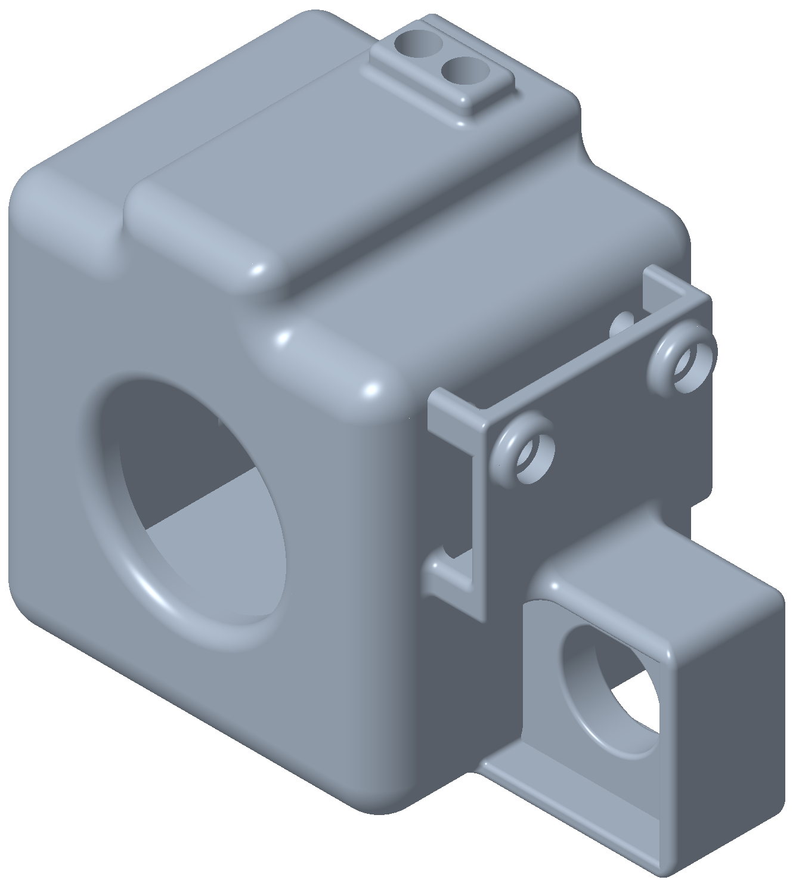
Motor and actuator holder CAD.
Design approach
Visual clarity with a mechanical reason.
1
Purpose shapes the form
Geometry communicates how a part locates, moves, grips or carries load. Good
visual design makes the operation easier to understand and harder to misuse.
2
Build early
CAD becomes useful when it meets real tolerances, materials, operators and
equipment. Prototypes turn assumptions into specific improvements.
3
Measure the result
Yield, stiffness, noise, durability and test compliance show whether a design
works. The strongest visual solution still has to earn its place mechanically.